CS184/284A Homework 2: MeshEdit
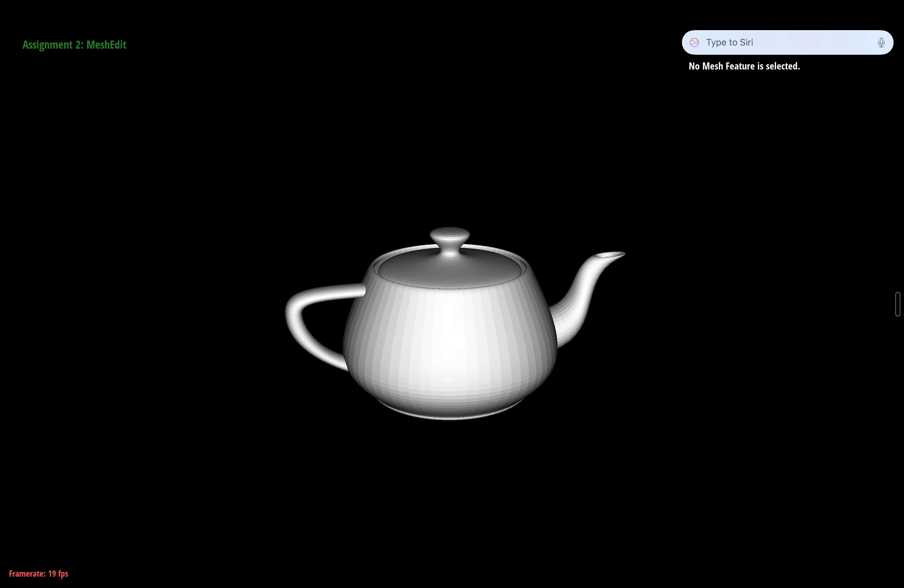
Overview
This homework is really two smaller projects in one. The first half covers Bezier curves and surfaces: given a handful of control points, how do you trace out the smooth shape they describe? The answer is de Casteljau's algorithm, which is just linear interpolation repeated until you run out of points. The second half goes down a level. You edit meshes directly through the half-edge data structure by computing vertex normals, flipping and splitting edges, and then combining those operations into Loop subdivision to smooth a mesh.
Both halves work the same way underneath. You get complicated geometry by applying a simple
local rule over and over. What surprised me most was how much of the mesh work is
bookkeeping. The math for an edge flip fits on a napkin, but if a single next()
or twin() pointer is wrong, the mesh falls apart as soon as the renderer tries to
walk it. Drawing before and after diagrams by hand and labeling every halfedge before I wrote
any code saved me a lot of pain (and debugging).
Section I: Bezier Curves and Surfaces
Part 1: Bezier curves with 1D de Casteljau subdivision
de Casteljau's algorithm evaluates a Bezier curve at a parameter \(t\) by doing linear interpolation over and over. Start with the \(n\) control points, and for each adjacent pair, place a new point a fraction \(t\) of the way from the first point to the second: \[ p_i' = \text{lerp}(p_i, p_{i+1}, t) = (1-t)\,p_i + t\,p_{i+1}. \] That gives \(n-1\) points. Do the same thing to those and you get \(n-2\), and so on. After \(n-1\) levels there's one point left, and it lies exactly on the curve. Sweeping \(t\) from 0 to 1 moves that point along and traces out the whole curve.
My implementation does one level per call. evaluateStep takes the current list
of points, loops over consecutive pairs, and pushes \((1-t)\,p_i + t\,p_{i+1}\) for each pair
into a new vector, which becomes the next level. \(t\) is a member of the class, so I read it
directly. Since each call drops the point count by one, the GUI can call it repeatedly (the
E key) to show the intermediate control polygons one level at a time.
Below is my own curve with 6 control points. Pressing E steps through each level, from the original control polygon down to the single evaluated point, and C toggles the full curve.
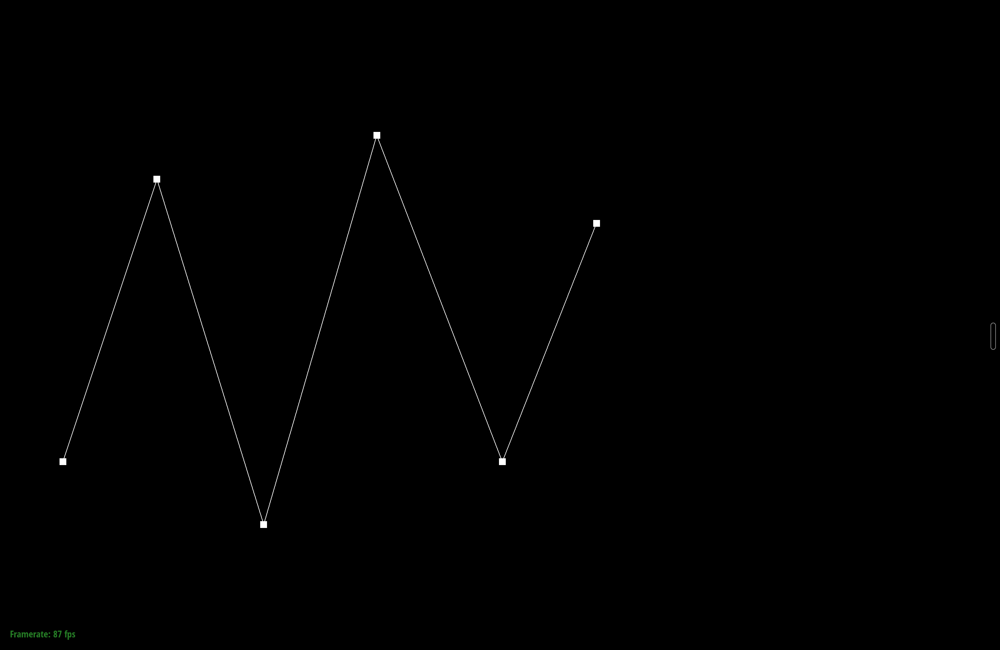
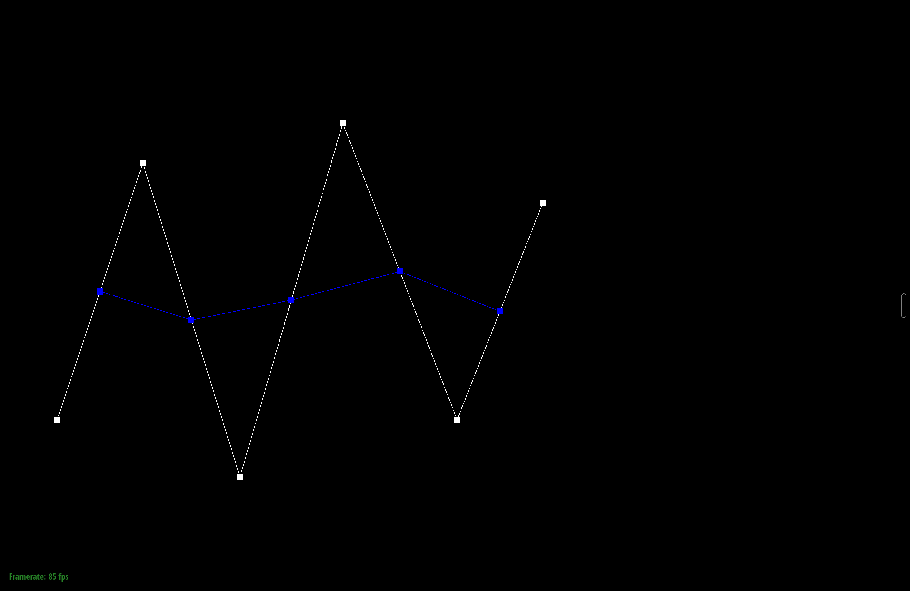
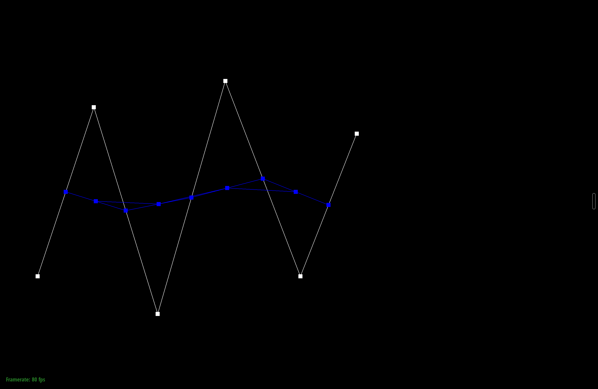
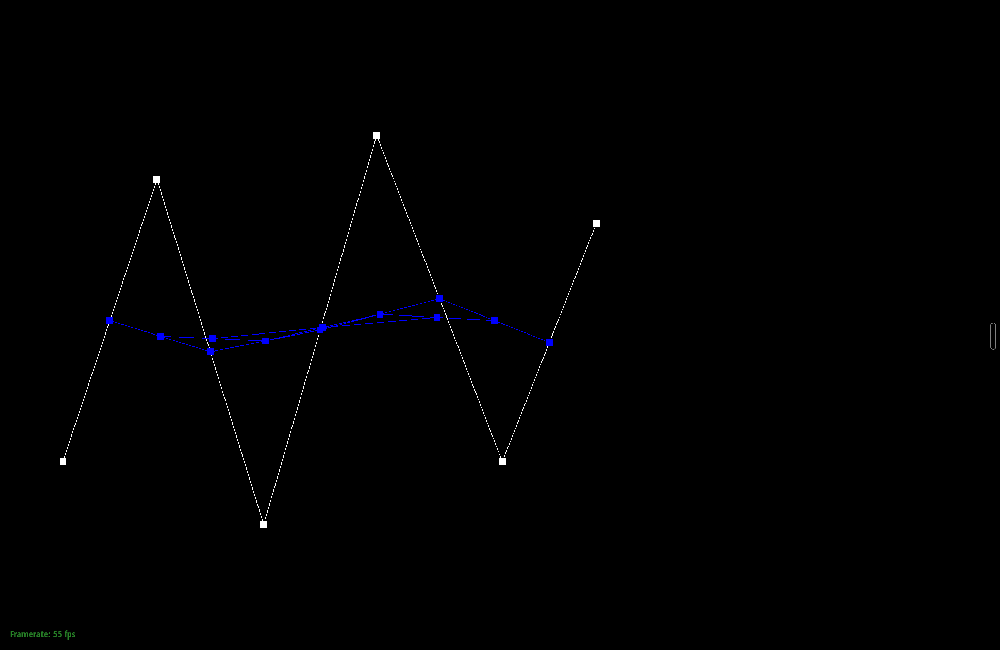
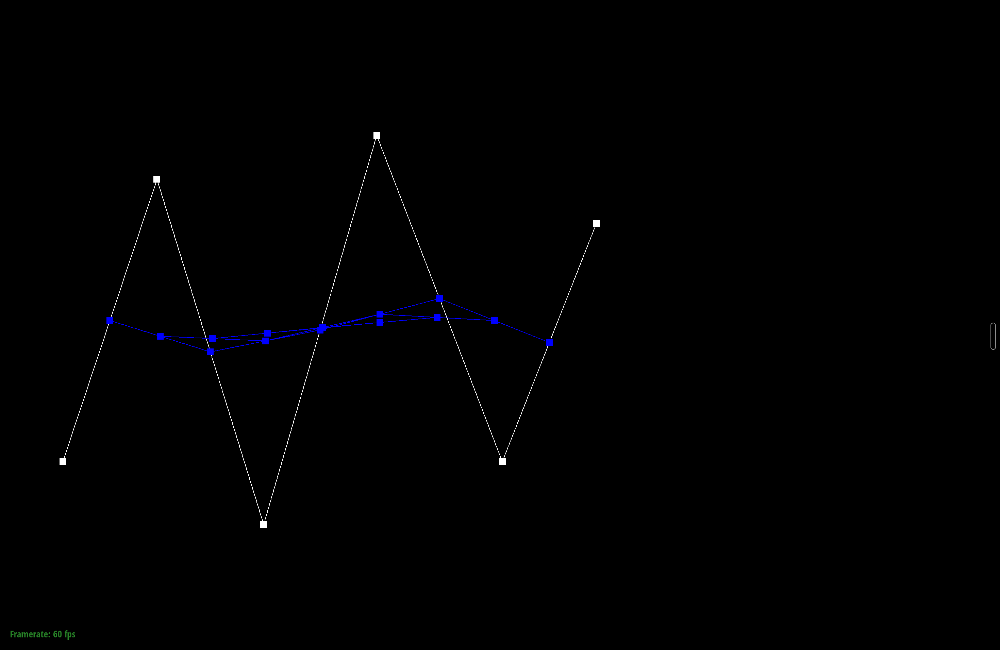
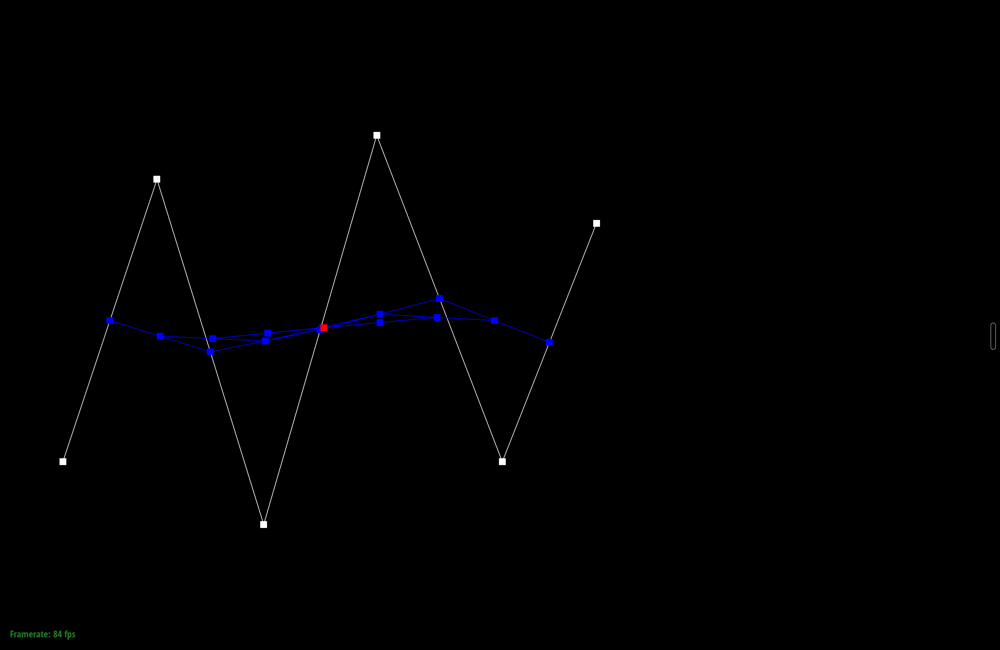
Here's a different version of the same curve. I dragged the control points around and scrolled to change \(t\), which slides the evaluated point along the curve and moves all the intermediate points with it.
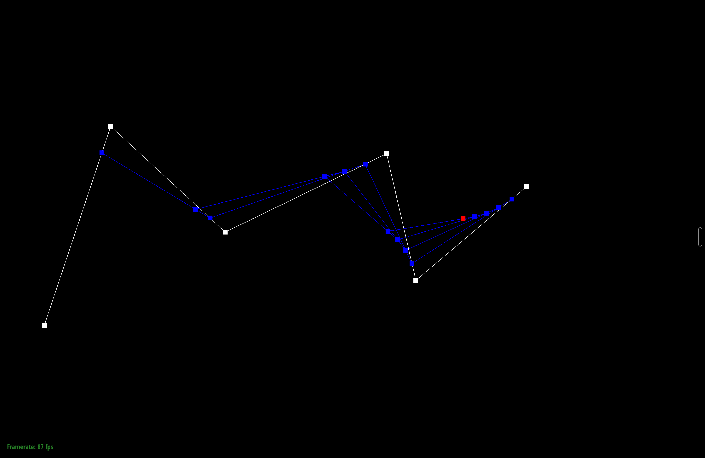
Part 2: Bezier surfaces with separable 1D de Casteljau
A Bezier surface is defined by an \(n \times n\) grid of control points and evaluated with two parameters, \(u\) and \(v\). The 2D problem is separable, so it's the 1D algorithm run twice. First I treat each row of the grid as its own Bezier curve and evaluate every row at the same \(u\), which collapses each row to one point. That leaves \(n\) points that roughly run down a column. Those points define one more Bezier curve, and evaluating it at \(v\) gives the final point on the surface.
In code this takes three functions. evaluateStep is the same single de Casteljau
step from Part 1, except it works in 3D and takes \(t\) as an argument.
evaluate1D calls that step in a loop until one point is left and returns it, so it
evaluates a full curve. evaluate(u, v) puts the two together. It calls
evaluate1D on each row of controlPoints at \(u\), collects the
resulting "moving" points into a column, and calls evaluate1D one more time on
that column at \(v\). The mesh builder calls this over a grid of \((u, v)\) samples to build
the surface.
Section II: Triangle Meshes and Half-Edge Data Structure
Part 3: Area-weighted vertex normals
A vertex doesn't have its own normal. It sits where several triangles meet, so I average the normals of those triangles. I don't need to normalize each face normal and then weight it by area by hand. For a triangle with corners \(p_0, p_1, p_2\), the cross product \((p_1 - p_0) \times (p_2 - p_0)\) already points in the normal direction, and its magnitude is twice the triangle's area. If I sum those raw cross products over every triangle touching the vertex, bigger triangles contribute more on their own, which is exactly the area weighting I want. Normalizing the sum at the end gets rid of the factor of 2.
To visit each face around the vertex, I start at the vertex's halfedge and move with
h = h->twin()->next() until I get back to the start, skipping boundary
faces. For each face I take the three corner positions from h,
h->next(), and h->next()->next(), add the cross product to
a running sum, and return n.unit() at the end. In the GUI, Q switches
between flat per-face shading and smooth per-vertex shading. The difference is easy to see on
curved surfaces like the teapot, where the faceting goes away.
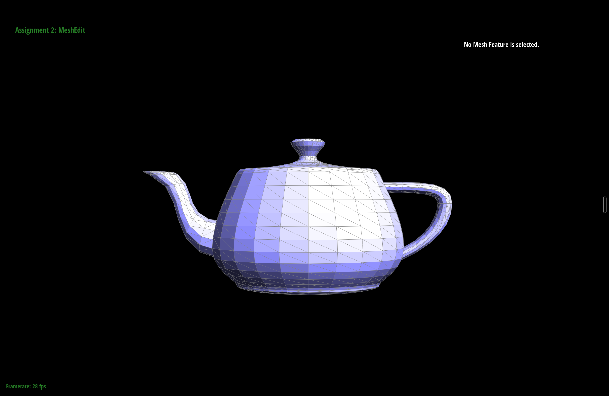
Part 4: Edge flip
An edge flip takes the two triangles that share an edge and moves the shared diagonal so it connects the other two corners. If the triangles are \((v_0, v_1, v_2)\) and \((v_1, v_0, v_3)\) and they meet along \(v_0 v_1\), after the flip the edge connects \(v_2\) and \(v_3\) instead, and the triangles become \((v_3, v_2, v_0)\) and \((v_2, v_3, v_1)\). The flip doesn't create or delete any vertices, edges, or faces. It only rewires pointers, which is why I can call it safely inside a loop in Part 6.
I wrote everything down before writing any code. I labeled the six interior halfedges
(\(h_0\) through \(h_5\)), the four outer twins (\(h_6\) through \(h_9\)), the four vertices,
the four outer edges, and the two faces. Then I reassigned the whole local neighborhood with
setNeighbors, which sets a halfedge's next, twin, vertex, edge, and face in one
call. The outer twins and outer edges don't change, so I only had to rebuild the six interior
halfedges. After that I made sure every vertex and face points to a halfedge that still
belongs to it, since the old pointers might be stale. Boundary edges can't be flipped, so in
that case I return early and leave the mesh alone.
The bug I hit was the classic one. At first I left a couple of the vertex
halfedge() pointers alone because I assumed they were still fine. One of them
wasn't. It pointed into the triangle in a way that no longer made sense, and the mesh looked
right until I flipped a second edge nearby and it tore. Explicitly reassigning all four vertex
pointers fixed it, and the labeled before and after drawing is what made the right
assignments clear.
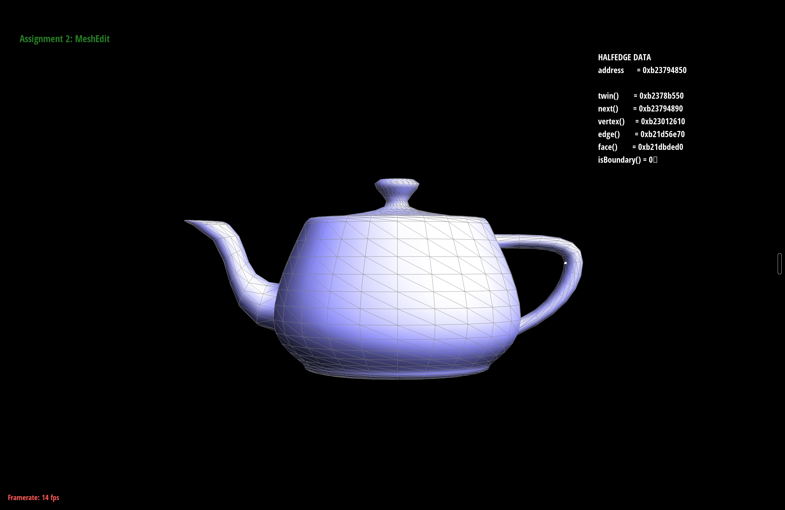
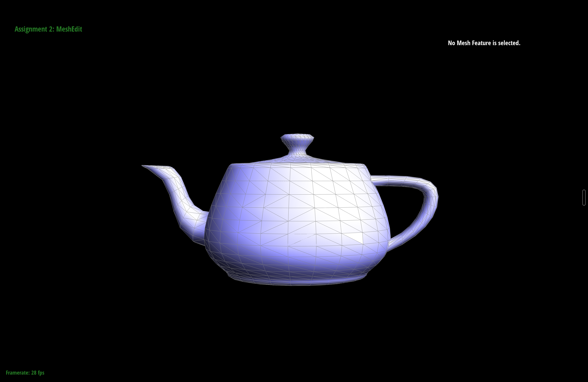
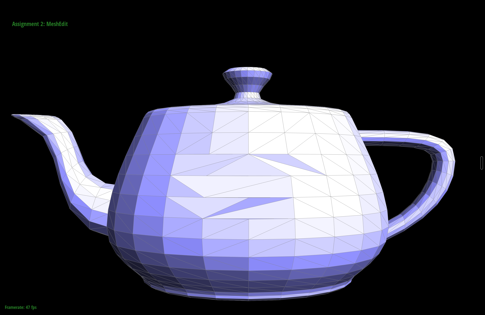
Part 5: Edge split
An edge split adds a new vertex \(m\) at the midpoint of an edge and divides the two triangles around it into four. Unlike the flip, this one adds geometry. Starting from the edge \(v_0 v_1\) with opposite corners \(v_2\) and \(v_3\), I end up with one new vertex, three new edges (one to \(v_2\), one to \(v_3\), and the second half of the original edge), two new faces, and six new halfedges. The four triangles are \((v_0, m, v_2)\), \((m, v_1, v_2)\), \((v_1, m, v_3)\), and \((m, v_0, v_3)\).
I used the same approach as the flip. I labeled the neighborhood first, then allocated the new
elements and wired everything with setNeighbors. I reused the two original
halfedges on the split edge (as \(v_0 \to m\) and \(v_1 \to m\)) and created the other six
from scratch, which kept the allocation count honest and made it easier to reason about. The
code comments say the new vertex's halfedge should run along the edge that was split,
not along one of the new cross edges, so I point m->halfedge() at the halfedge
on the original edge. I also set the isNew flags here. The two edges along the original
split line are not new, and the two that cut across the old triangles are. Part 6 depends on
this flag.
For debugging I used the CHECK_CLOSED, CHECK_FACE, and
CHECK_VERTEX assertions from the spec to confirm that each new face was a closed
loop and each vertex pointed back at the right halfedges before I trusted the result in the
GUI. My one mistake was an edge whose halfedge() I forgot to set. It didn't break
the split itself. It showed up later as a crash during Loop subdivision.
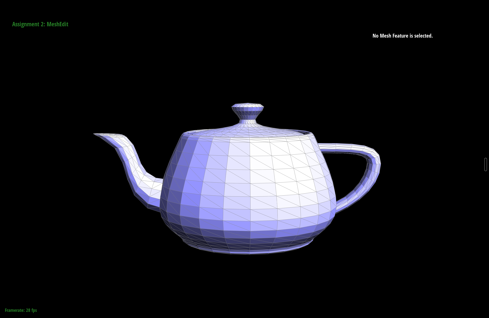
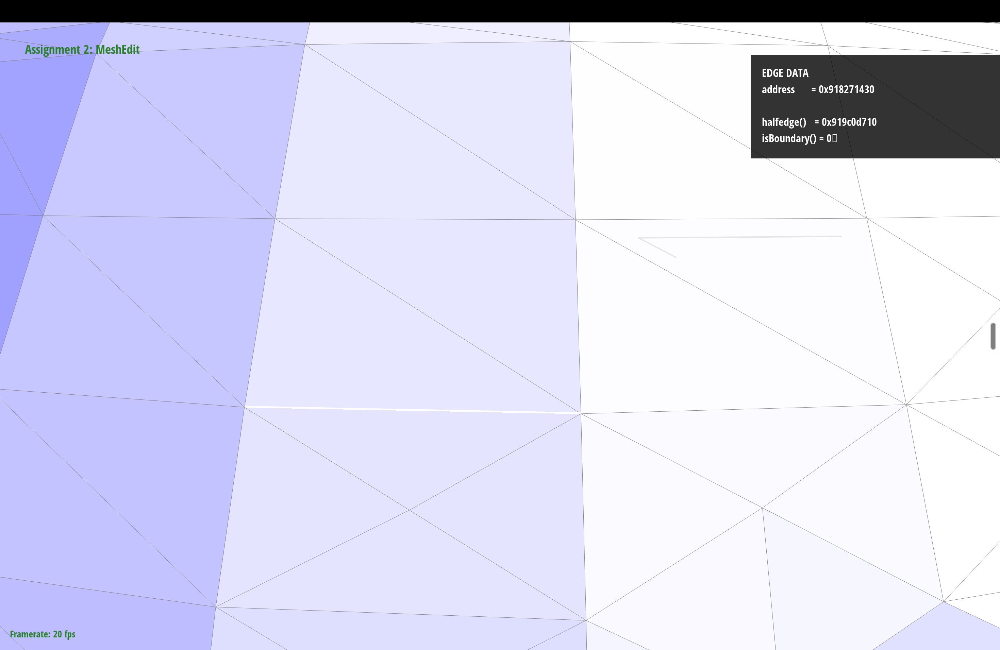
degree() = 4).Part 6: Loop subdivision for mesh upsampling
Loop subdivision smooths a mesh by splitting every triangle into four and then moving each vertex toward a weighted average of its neighbors. I implemented it as the five-step pipeline the comments suggest. It's built entirely from the edge split and edge flip in the previous two parts, so I didn't need to write any new topology code.
-
For every original vertex I compute its smoothed position
\((1 - n u)\,\text{position} + u \sum \text{neighbors}\), where \(n\) is the degree
and \(u = \frac{3}{16}\) when \(n = 3\), otherwise \(u = \frac{3}{8n}\). I store this
in
newPositionand mark the vertex as not new. -
For every original edge I compute where its midpoint vertex should go using the
\(\frac{3}{8}(A + B) + \frac{1}{8}(C + D)\) rule, where \(A\) and \(B\) are the
endpoints and \(C\) and \(D\) are the two opposite corners. I store the result in the
edge's
newPosition. -
I split every original edge, and only the original ones.
splitEdgeadds its new edges to the end of the list, so I save the edge count first and walk exactly that many. That way I never split an edge I just created. Each new midpoint vertex gets the position from step 2 and is marked as new. -
I flip every new edge that connects an old vertex to a new vertex. After the splits,
these cross edges run from a midpoint to an old corner. Flipping them connects the
midpoints to each other, so each original triangle becomes four clean ones. The
isNewflags from Part 5 let me tell these edges apart from the ones lying on the original edges, which shouldn't be flipped. -
Last, I copy every
newPositionintoposition. I do this all at once so that no vertex update uses a neighbor that was already moved.
Some things I noticed while playing with it. Sharp corners and edges round off and lose their crispness as you subdivide, because the smoothing rule has no idea an edge was supposed to stay sharp. The cow below shows the general effect: each round quadruples the triangle count and the surface relaxes toward something smooth.
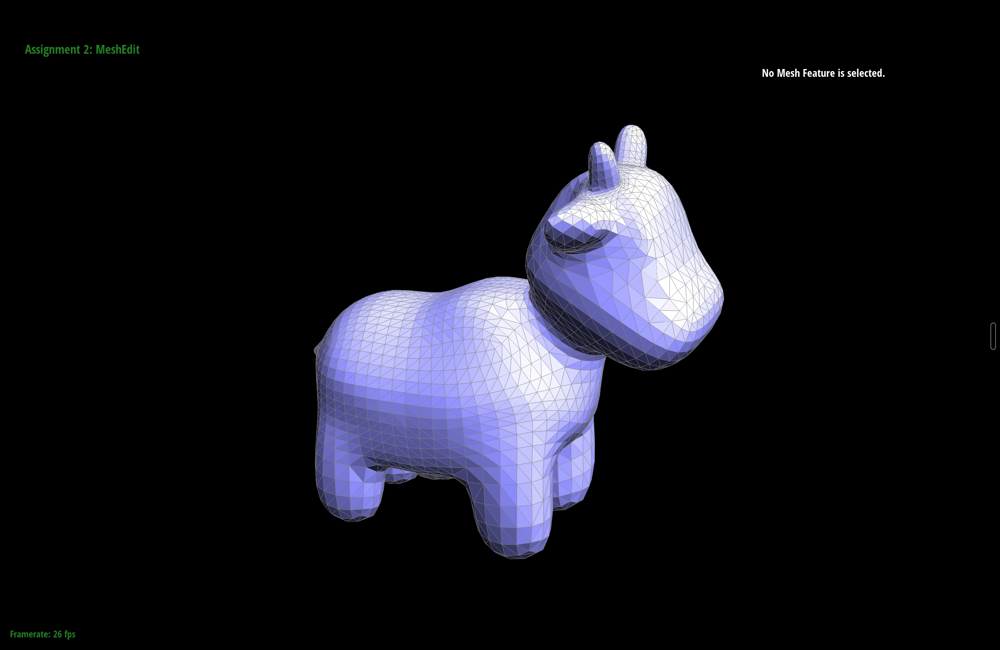
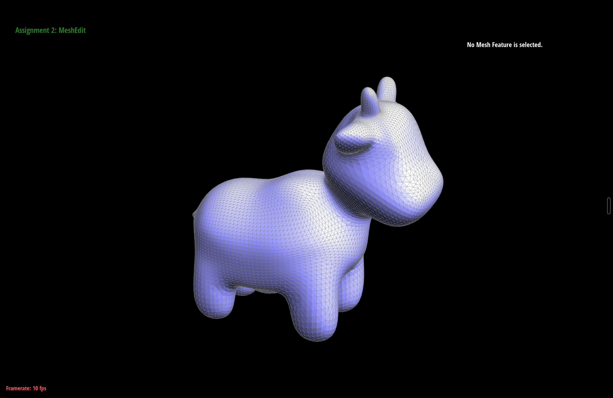
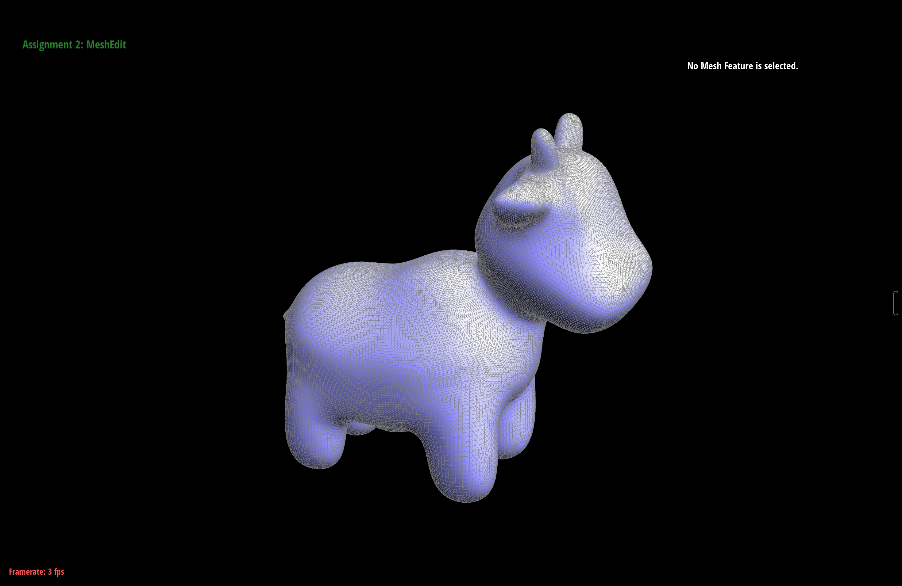
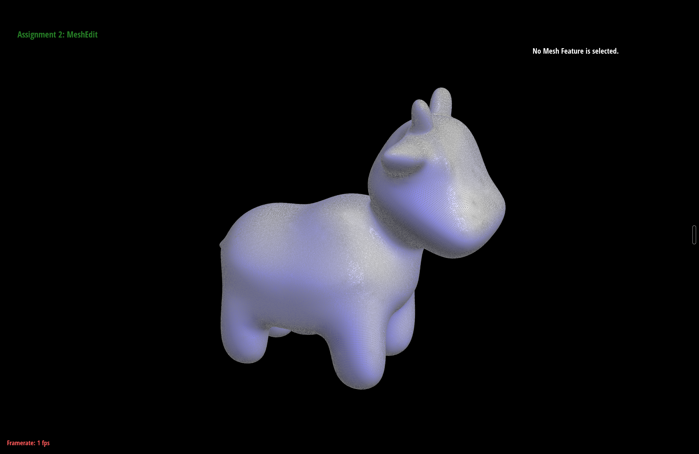
Why the cube subdivides asymmetrically
Loading cube.dae and pressing L a few times gives a lopsided blob instead
of a symmetric rounded cube. The cause is the triangulation. Each square face of the cube is
cut by a single diagonal, and those diagonals leave the eight corners with uneven vertex
degrees: the two endpoints of each face diagonal pick up an extra edge, so some corners end up
with degree 6 while others stay at degree 3. Loop's vertex-update weight \(u = \frac{3}{8n}\)
depends on the degree \(n\), so corners of different degree are pulled toward their neighbors
by different amounts. That uneven pull is exactly what throws off the symmetry, and it only
gets more pronounced with each round.
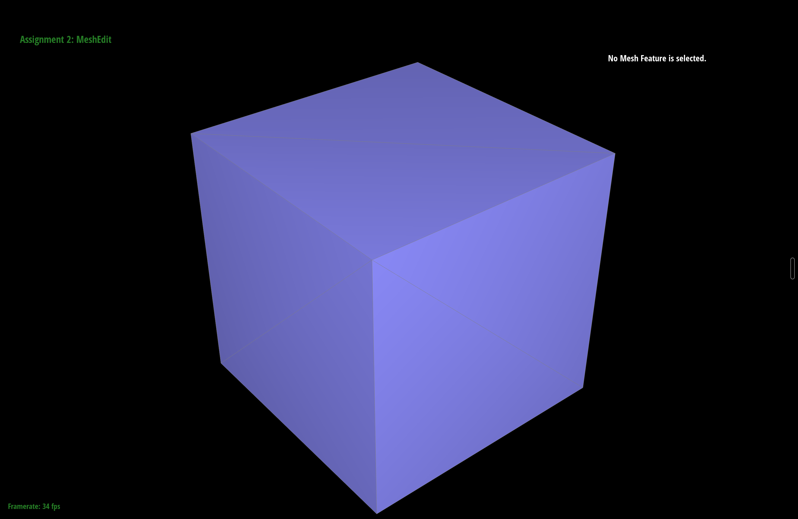
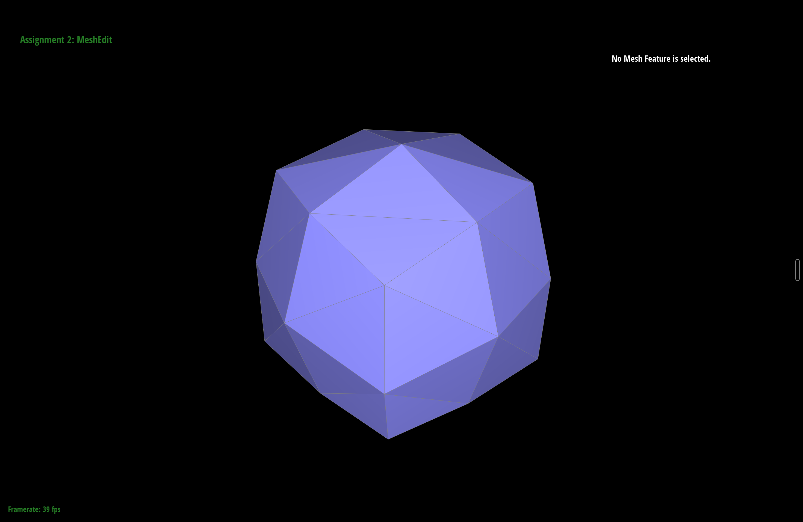
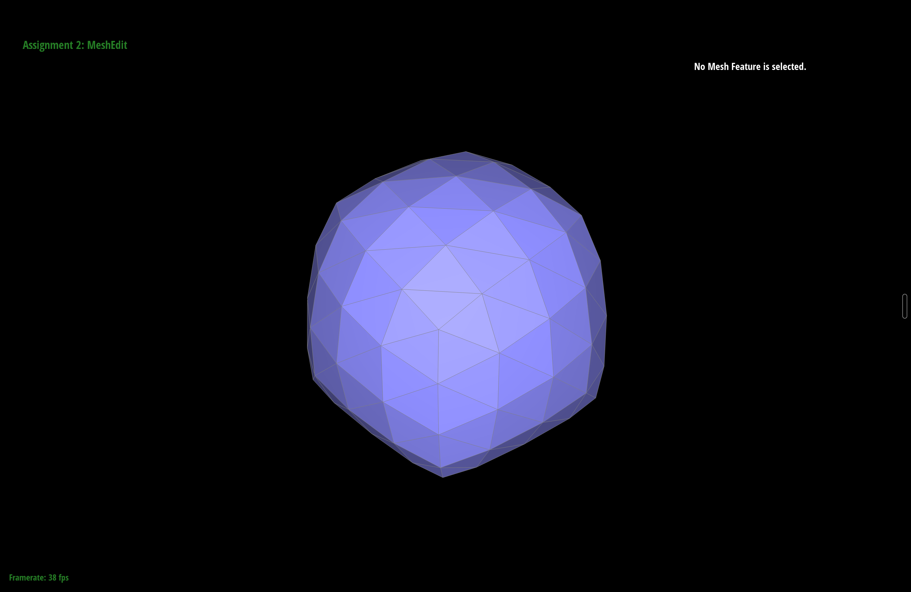
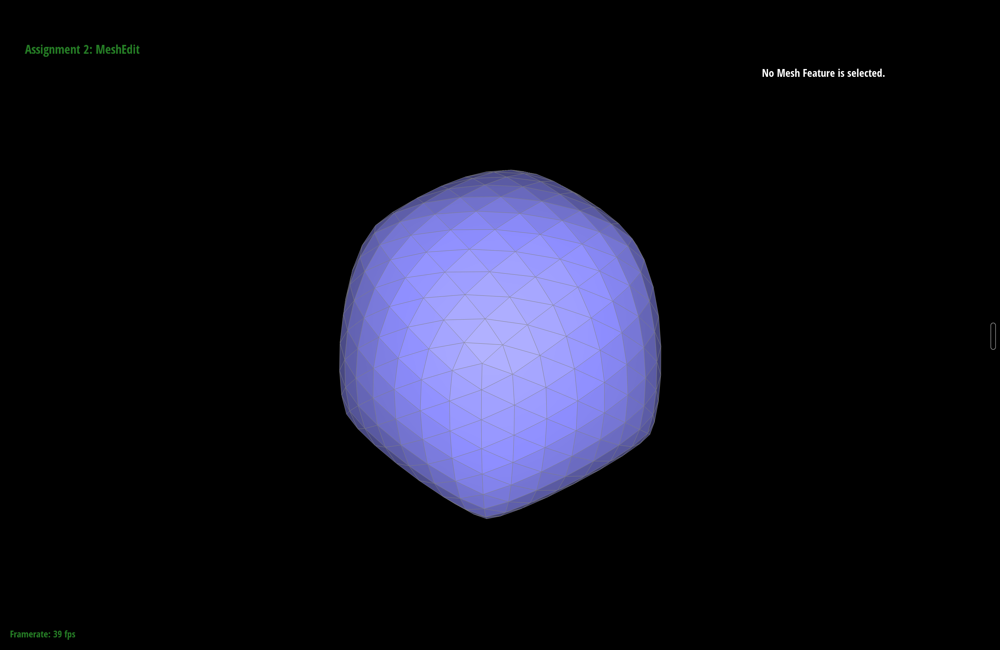
Fixing it with pre-processing
To make the cube subdivide symmetrically I split the diagonal edge of every face before running any Loop subdivision. Splitting a face's diagonal drops a new vertex at the center of that face and turns its two triangles into four, with the center vertex joined to all four corners. After doing this to all six faces, every original corner touches three cube edges plus three face-center edges, so all eight corners now have the same degree (6) and all six face centers have the same degree (4). With the degrees made uniform and the configuration identical at every corner, Loop pulls every vertex by the same weight, and the cube converges to a symmetric rounded shape. Both cubes below are subdivided the same three times. (The symmetric one looks a little larger, partly because the extra pre-split vertices let it hold its volume and shrink less than the plain cube.)
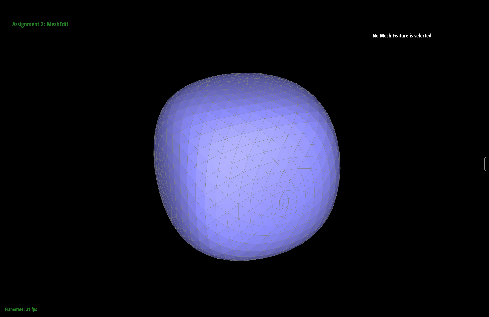
Can pre-splitting keep sharp features?
Up to a point, yes. The reason sharp corners and edges wash out is that Loop only has a few samples near them, so each averaging step pulls those few points well inside the original crease. Splitting the edges near a feature before subdividing packs extra vertices right there, so Loop has more local geometry to work with and the surface stays closer to the original around that feature while the sparsely-sampled regions round off freely. In practice the effect is gradual: a light pre-split only slows the rounding a little, and you need a fair amount of extra density concentrated at the feature before a crease visibly holds its shape. It's really a trade of mesh size for sharpness, which is why dedicated sharp-crease schemes exist rather than relying on plain Loop. The pair below shows the experiment: both cubes are subdivided the same number of times, but the one on the right had the edges around one corner pre-split first, so that corner holds a tighter shape than the freely-rounded rest.
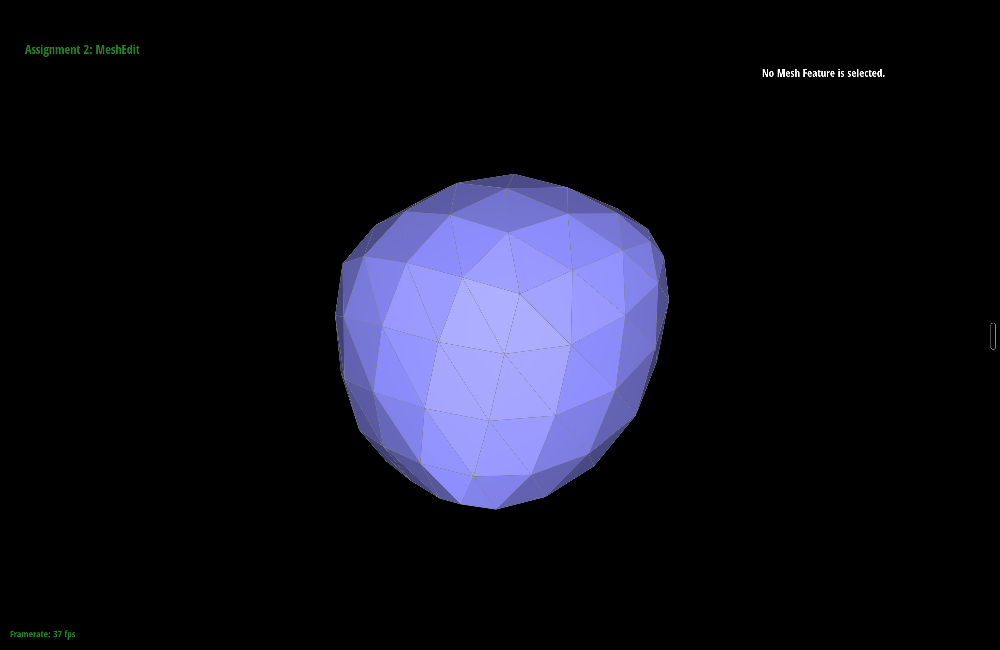
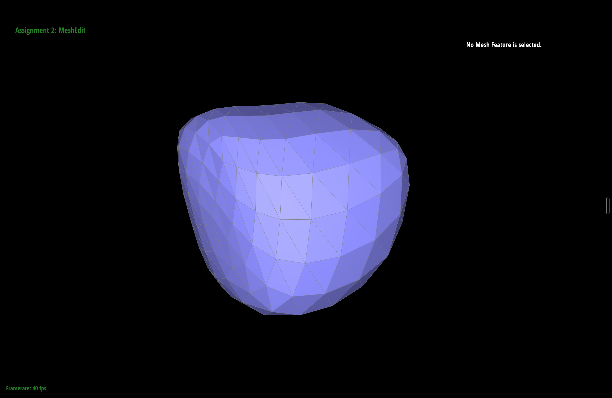
Extra Credit
These three features go beyond the required parts. They all live in the same
student_code.cpp: the boundary handling is built into splitEdge
and upsample, and Butterfly is a separate resampler bound to the B key.
For the boundary cases I included a couple of open meshes in the repo
(dae/open_sheet.dae and dae/open_dome.dae) whose perimeter is a boundary.
Boundary edge splits
A boundary edge has a real triangle on only one side; the other side is the virtual boundary face. So instead of making four triangles, I split the single real triangle into two and splice the new midpoint into the boundary loop. Concretely, I reorient so my interior halfedge sits on the real face, split that triangle into \((v_0, m, v_2)\) and \((m, v_1, v_2)\), then replace the one boundary halfedge \(v_1 \to v_0\) with two boundary halfedges \(v_1 \to m\) and \(m \to v_0\), keeping the boundary vertices (including the new \(m\)) pointed at a boundary halfedge per the class convention.
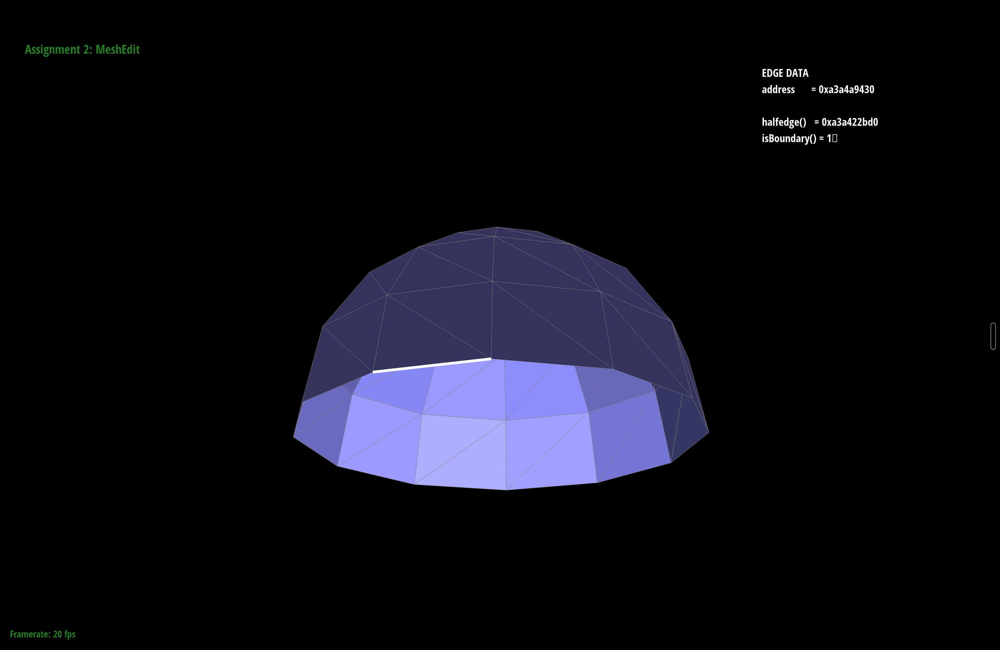
isBoundary() = 1.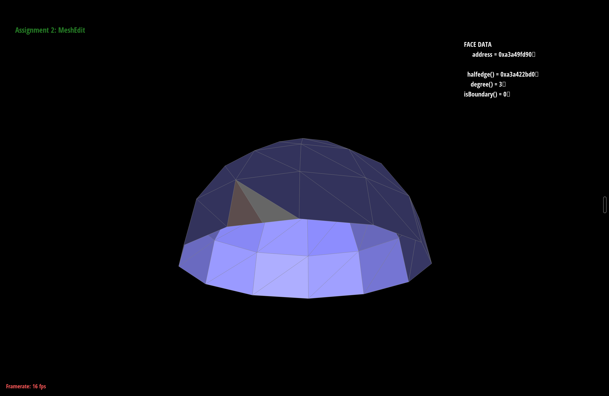
Loop subdivision on meshes with boundary
With boundary splits working, Loop extends to open meshes. Two rules change. A boundary edge has no pair of opposite vertices, so its midpoint is simply \(\frac{1}{2}(A + B)\) rather than the \(\frac{3}{8}/\frac{1}{8}\) stencil. And a boundary vertex is smoothed like a point on a cubic B-spline curve, using only its two boundary neighbors: \(\frac{3}{4}\,v + \frac{1}{8}(n_1 + n_2)\). Interior vertices and edges are untouched, so closed meshes subdivide exactly as before, while an open mesh keeps a clean boundary instead of tearing or collapsing.
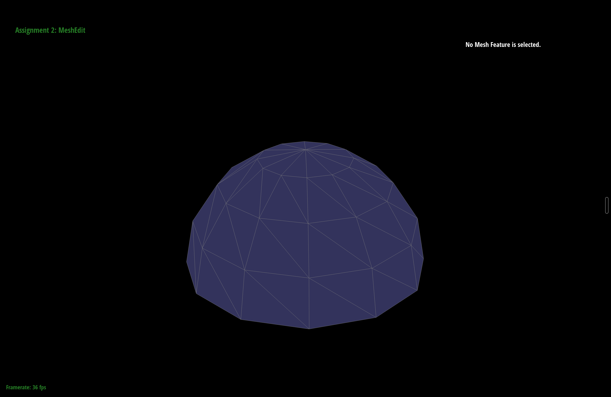
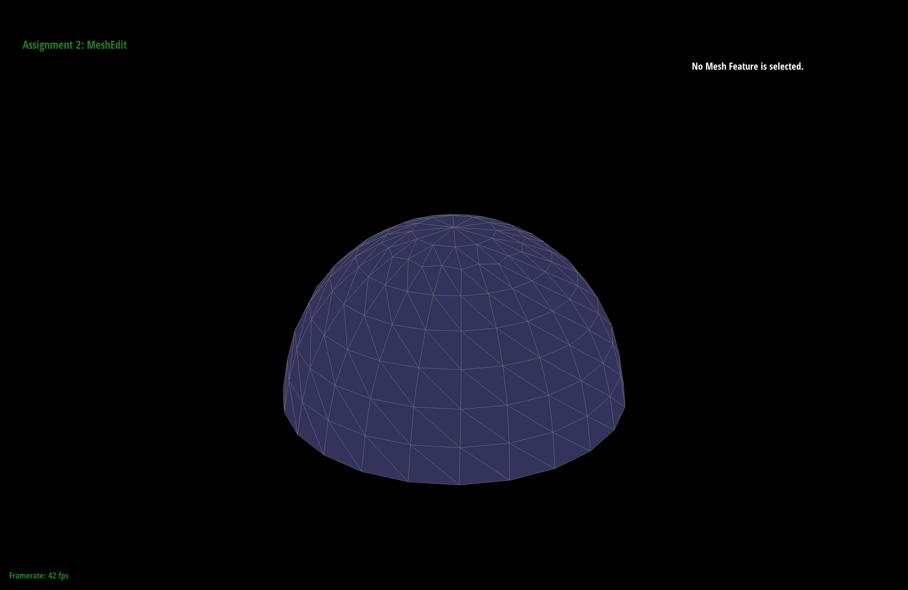
Butterfly subdivision (B key)
Butterfly is a second subdivision scheme, invoked with the B key. Its topology step is identical to Loop (split every edge, flip the new old-to-new edges), so it reuses the same machinery. The difference is the geometry: Butterfly is interpolating rather than approximating. The original vertices never move, and each new edge vertex is placed with an 8-point stencil, \[ p = \tfrac{1}{2}(a + b) + \tfrac{1}{8}(c + d) - \tfrac{1}{16}(e + f + g + h), \] where \(a, b\) are the edge endpoints, \(c, d\) the two opposite wing vertices, and \(e, f, g, h\) the four outer wings reached by hopping across the neighboring triangles. Because the old vertices stay fixed, Butterfly keeps the surface passing through the original points, so it shrinks less than Loop, though it can look slightly less smooth at irregular vertices.

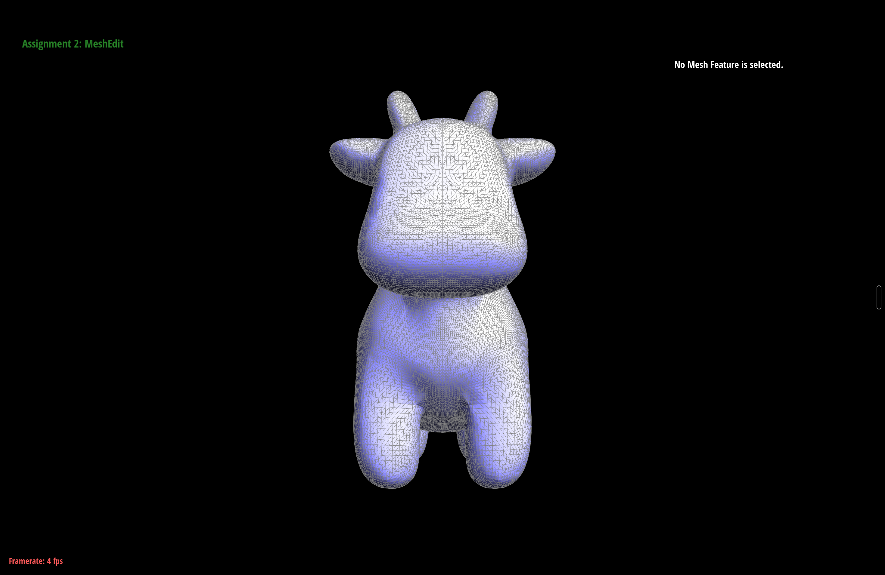